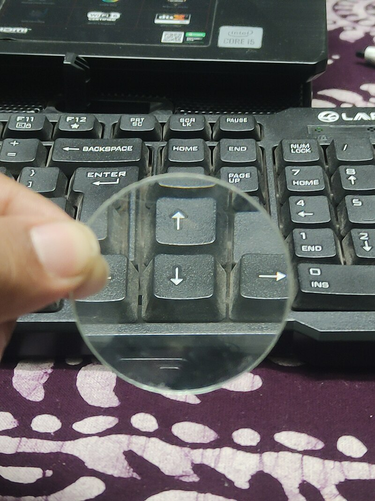
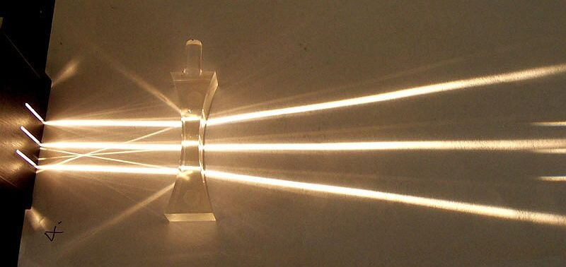

探
本節探究 紙屏接得到的像是哪一種？
重點概覽：焦距 ｜ 物距 ｜ 像距 ｜ 實像虛像
放大鏡能把陽光聚成亮點；蠟燭的像有時倒立、有時正立。先預測：凸透鏡能不能既有實像又有虛像？凹透鏡呢？下面各站找證據。
探究問題：紙屏接得到的是實像還虛像？物體靠近時，像會變大還變小？
重點概覽：焦距 ｜ 物距 ｜ 像距 ｜ 實像虛像
放大鏡能把陽光聚成亮點；蠟燭的像有時倒立、有時正立。先預測：凸透鏡能不能既有實像又有虛像？凹透鏡呢？下面各站找證據。
平行光會聚的那一點
探究線索：凸透鏡可能呈現實像、虛像嗎？凹透鏡呢？（可複選）
目的：改變光源、透鏡及紙屏的相對位置，探討透鏡的成像性質。
預測：凸透鏡可能呈現 與 ； 凹透鏡可能呈現 。


核對時先分清哪一面是凸、哪一面是凹。光學軌道示意仍用步驟裡的圖。照片：Wikimedia Commons（CC BY-SA）
對照上面的器材表，逐項勾選。到齊且完好／足量才打勾；透鏡有沒有明顯刮傷或破裂寫在備註。
| 項次 | 材料 | 應備 | 到齊 | 完好／足量 | 備註 |
|---|---|---|---|---|---|
| 1 | 已知焦距的凸透鏡 | 1 面 | |||
| 2 | 凹透鏡 | 1 面 | |||
| 3 | 白紙屏 | 1 組 | |||
| 4 | 蠟燭（或三色 LED） | 1 支 | |||
| 5 | 直尺或光學儀器架 | 1 組 |
全組依表勾完；缺件或透鏡破裂時先舉手，不要自行挪用別組。
缺件寫在空格，沒有就寫「無」。確認到齊後才量焦距。缺件：
步驟 Q：為什麼材料沒確認完就不能做？
少了凸透鏡或紙屏就接不到像；兩面透鏡拿反，後面的實像、虛像會全錯。
凸透鏡可使平行光會聚於焦點。移動透鏡，使光線在白紙上會聚成最小、最亮的點，該點到鏡面的距離就是焦距。太陽光可視為平行光；沒有陽光可用手電筒。
光源到鏡心叫做物距；紙屏到鏡心叫做像距。用蠟燭時注意安全。
這一站的證據：先有 f，才能談物距和成像。下一站改物距，看像怎麼變。
凸透鏡五種位置；凹透鏡接不到紙屏
探究線索：蠟燭從 2f 以外慢慢靠近透鏡，紙屏上的像會變大還變小？有沒有一個距離完全接不到？
凸透鏡可使平行光會聚於焦點。移動透鏡，使光線在白紙上會聚成最小、最亮的點，該點到鏡面的距離就是焦距。太陽光可視為平行光；沒有陽光可用手電筒。
記下這面凸透鏡的焦距 f（公分）。
將已知焦距的凸透鏡，固定於紙屏與光源之間。光源到鏡心叫物距，紙屏到鏡心叫像距。
若使用蠟燭作為光源，務必注意安全。
紙屏前後移動，是在找光線真的會聚的位置
光源從 2f 以外逐漸靠近透鏡，依序經過大於 2f、等於 2f、介於 f～2f、等於 f、小於 f。每次都把紙屏前後移動，直到像最清楚。
觀察像的大小與正倒；比較物距、像距和焦距。
若紙屏接不到像，改從紙屏這一側透過透鏡觀察。
換成已知焦距的凹透鏡。物距在 f 外、f 內都觀察一次。
紙屏通常接不到像，改用眼睛透過透鏡看。
記錄凹透鏡的成像性質。
口訣：物遠像近縮小倒；物近像遠放大倒；物在焦點無法成；物進焦內正立虛（放大，紙屏沒有）。
這一站的證據：實像在紙屏，虛像用眼睛看。下一站把五列性質填進表。
物距、像距請依實測；性質為參考答案
探究線索：物距從大於 2f 縮到小於 f，倒立會在哪一列變成正立？
| 物距與 f | 像距與 f | 正倒 | 大小 | 實虛 |
|---|---|---|---|---|
| 大於 2f | 介於 f～2f | |||
| 等於 2f | 等於 2f | |||
| 介於 f～2f | 大於 2f | |||
| 等於 f | ||||
| 小於 f | 無法在紙屏成像 | |||
物距大於 f 或小於 f，紙屏都無法成像，性質都是 。
這一站的證據：五列性質表就是本節主張。收成速記後，就能回答本節問題。
紙屏＝實像；眼睛看＝虛像
證據卡：對照成像表再寫主張。
用成像表回答提問
紙屏接得到的是實像（倒立）。物體從遠處靠近凸透鏡（仍在 f 外）時，像變大、像距變長；物距小於 f 時紙屏接不到，改為正立放大虛像。凹透鏡無論物距都是正立縮小虛像。
下一站要問：紅光照到白紙和綠紙，看起來會一樣嗎？